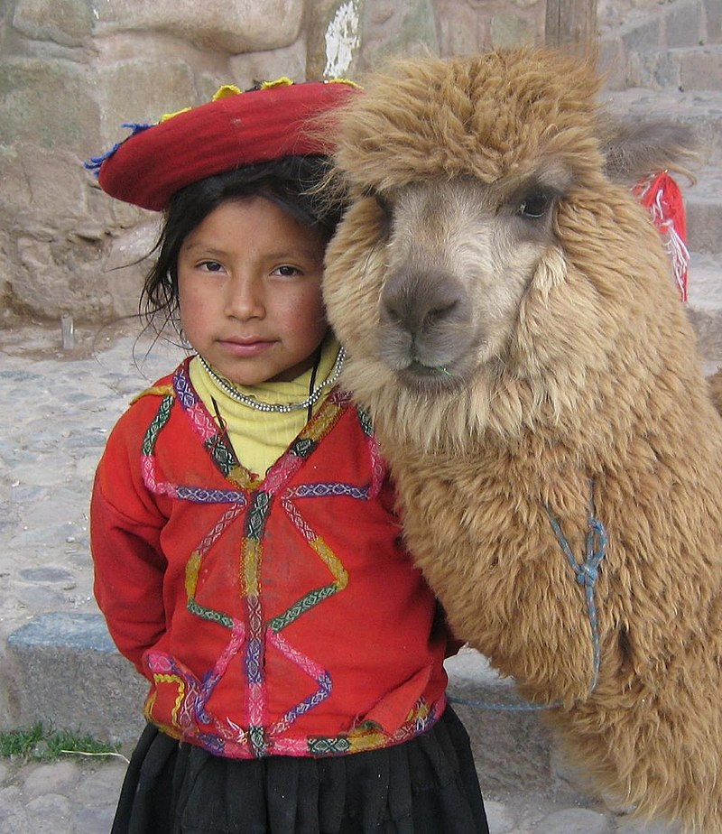
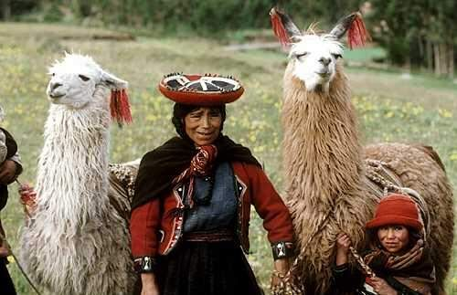

Quechuas
Quechua, o quichua en Ecuador, es un etnónimo empleado para designar a pueblos indígenas originarios o emigrados de los actuales Estados de Argentina, Bolivia, Chile, Colombia, Ecuador y el Perú. El nombre deriva del quechua, familia lingüística extendida por gran parte de la región andina sudamericana y relacionada con el Imperio incaico.
La variante «quichua» se utiliza en Ecuador, en la selva norte del Perú (véase Napuruna y Llacuash) y en Argentina.

La población que se identificó como quechua en el censo boliviano de 2001 fue de 1 555 641 personas. Este número descendió a 1 281 116 en el censo de 2012